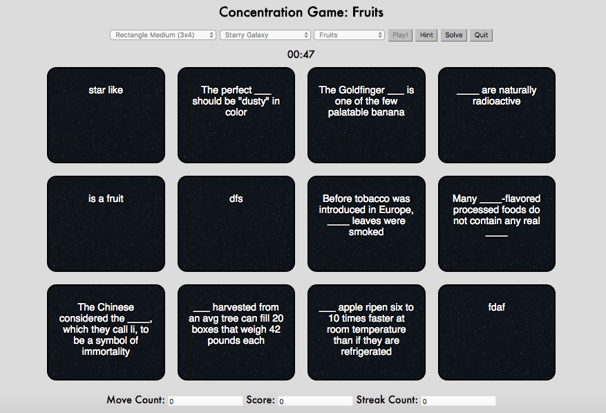

1. Select the desired board configuration from the drop down menu.

1. Select the desired board configuration from the drop down menu.
2. Select the desired card background from the drop down menu.

3. Select a category for your game from the drop down menu.

4. Press Play to begin game play!
5. This is an example game board. Scroll down in your screen to make sure you can see your gameboard fully.
6. Once you have your board setup however you like, click on a card. It will become highlighted yellow when you select it (as show by the blue circled card). Note the orange circled card for future instructions.
7. When you select two cards, they both highlight yellow, and then rotate to show you the hints on the back. As you can see, these two cards no longer have the hints on the cards as the previous image. That is because they have rotated to show the terms on the backside of the card. This is to help you learn what the hints on the front actually represent. (aka the answers that match to the hints)

8. Notice that the hints are now different. The cards are still here because the two cards that were selected were an incorrect match. If you select an incorrect pair of cards, then new hints will appear, if you make multiple hints for a term, and the hints will be randomly shuffled through.

9. If you select two cards that are a correct match, the cards will disappear as shown here.

Note: The goal is to clear the board by matching all the pairs of cards correctly. If you clear the board, you "win" and this is what is seen.

Note: Pressing the HINT button will clear one pair of cards from the deck.

Note: Pressing the SOLVE button will clear all of the cards from the deck.

Note: Pressing the QUIT button will refresh the page and allow you to reselect board configurations.